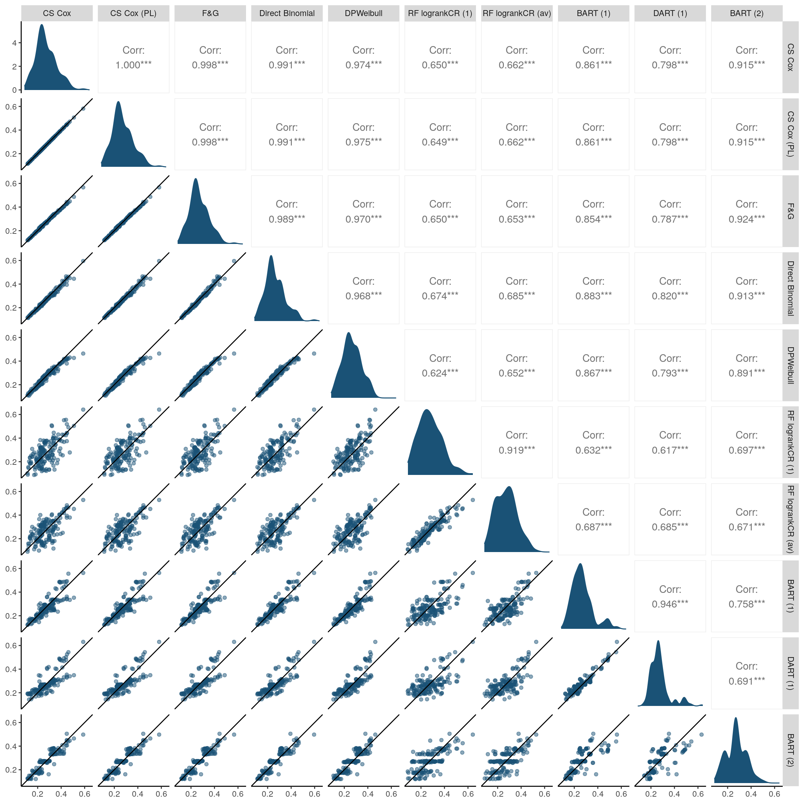

Here, we load the predicted probabilities of observing an event of type 1 by \(t=5\) that were obtained by different methods
if (file.exists("/.dockerenv")){
pred_CS <- read.csv("/Outputs/pred_CS.csv")
pred_CIF <- read.csv("/Outputs/pred_CIF.csv")
pred_Others <- read.csv("/Outputs/pred_Others.csv")
pred_BART <- read.csv("/Outputs/pred_BART.csv")
} else {
pred_CS <- read.csv("../Outputs/pred_CS.csv")
pred_CIF <- read.csv("../Outputs/pred_CIF.csv")
pred_Others <- read.csv("../Outputs/pred_Others.csv")
pred_BART <- read.csv("../Outputs/pred_BART.csv")
}
pred_all <- merge(pred_CS, pred_CIF, by = "testID")
pred_all <- merge(pred_all, pred_Others, by = "testID")
pred_all <- merge(pred_all, pred_BART, by = "testID")
names(pred_all)
#> [1] "testID" "coxph_riskRegression" "coxphPL_riskRegression"
#> [4] "FG_riskRegression" "DirectBinomial" "DPWeibull"
#> [7] "RF_logrankCR" "RF_logrankCR.av" "crisk2.bart"
#> [10] "crisk2.bart_dart" "crisk.bart"The data above includes predictions obtained using the following methods:
coxph_riskRegression: Cause-specific Cox PH (CS Cox)
modelcoxphPL_riskRegression: Cause-specific Cox PH (CS Cox)
model using a product limit (PL) approach to calculated predicted
probabilities. The latter ensures that (in the limit) the event-specific
probabilities sum up to 1 across events.FG_riskRegression: Fine & Gray (F&G)
regressionDirectBinomial: Direct binomialDPWeibull: Dependent Dirichlet ProcessRF_logrankCR: Random Forests (RF) using a modified
Gray’s criteria as the splitting rule, focusing on the first event type.
The latter aims to identify covariates that affect the CIF for the first
event type.RF_logrankCR.av: as above, but the splitting rule
considers the average between the first and second event types.crisk2.bart: BART using its first formulationcrisk2.bart_dart: DART - a variation of BART (first
formulation) that enables feature selectioncrisk.bart: BART using its second formulationAs shown below, all methods led to correlated predictions. The greatest similarity was between the classical approaches (CS Cox, F&G, Direct binomial). BART, under its second formulation, also led to similar predictions. RF exhibited the greatest discrepancy with respect to such methods above. Note that for the different BART approaches and DPWeibull, predicted probabilities may be affected by lack of convergence of the algorithm.
library(GGally)
#> Registered S3 method overwritten by 'GGally':
#> method from
#> +.gg ggplot2
#>
#> Attaching package: 'GGally'
#> The following object is masked from 'package:pander':
#>
#> wrap
# Code to control axis limits was adapted from: https://stackoverflow.com/questions/53277656/how-to-define-facet-axis-limits-in-ggpairs-function
scatter_limitRange <- function(data, mapping, ...) {
ggplot(data = data, mapping = mapping, ...) +
geom_point(..., col = "#1A5276", alpha = 0.5) +
geom_abline(intercept = 0, slope = 1) +
scale_x_continuous(limits = c(min(pred_all[,-1]), max(pred_all[,-1]))) +
scale_y_continuous(limits = c(min(pred_all[,-1]), max(pred_all[,-1]))) +
theme_classic()
}
dens_limitRange <- function(data, mapping, ...) {
ggplot(data = data, mapping = mapping, ...) +
geom_density(..., col = "#1A5276", fill = "#1A5276") +
scale_x_continuous(limits = c(min(pred_all[,-1]), max(pred_all[,-1]))) +
theme_classic()
}
my.labels <- c("CS Cox", "CS Cox (PL)", "F&G", "Direct Binomial",
"DPWeibull", "RF logrankCR (1)", "RF logrankCR (av)",
"BART (1)", "DART (1)", "BART (2)")
ggpairs(pred_all, columns = 2:11, progress = FALSE,
lower = list(continuous = scatter_limitRange),
diag = list(continuous = dens_limitRange),
columnLabels = my.labels)
if (file.exists("/.dockerenv")){ # running in docker
ggsave("/Outputs/Comparison_predictions_t5.pdf", device = "pdf")
} else {
ggsave("../Outputs/Comparison_predictions_t5.pdf", device = "pdf")
}
#> Saving 12 x 12 in imageTo evaluate the predictive performance for each methods, users can follow the examples provided by van Geloven et al.
sessionInfo()
#> R version 4.3.1 (2023-06-16)
#> Platform: aarch64-unknown-linux-gnu (64-bit)
#> Running under: Ubuntu 22.04.3 LTS
#>
#> Matrix products: default
#> BLAS: /usr/lib/aarch64-linux-gnu/openblas-pthread/libblas.so.3
#> LAPACK: /usr/lib/aarch64-linux-gnu/openblas-pthread/libopenblasp-r0.3.20.so; LAPACK version 3.10.0
#>
#> locale:
#> [1] LC_CTYPE=en_US.UTF-8 LC_NUMERIC=C
#> [3] LC_TIME=en_US.UTF-8 LC_COLLATE=en_US.UTF-8
#> [5] LC_MONETARY=en_US.UTF-8 LC_MESSAGES=en_US.UTF-8
#> [7] LC_PAPER=en_US.UTF-8 LC_NAME=C
#> [9] LC_ADDRESS=C LC_TELEPHONE=C
#> [11] LC_MEASUREMENT=en_US.UTF-8 LC_IDENTIFICATION=C
#>
#> time zone: Etc/UTC
#> tzcode source: system (glibc)
#>
#> attached base packages:
#> [1] parallel stats graphics grDevices utils datasets methods
#> [8] base
#>
#> other attached packages:
#> [1] GGally_2.1.2 randomForestSRC_3.2.2
#> [3] BART_2.9.4 nlme_3.1-162
#> [5] nnet_7.3-19 pander_0.6.5
#> [7] mboost_2.9-7 stabs_0.6-4
#> [9] glmnet_4.1-8 Matrix_1.6-1
#> [11] pec_2023.04.12 rms_6.7-0
#> [13] Hmisc_5.1-0 patchwork_1.1.3
#> [15] lubridate_1.9.2.9000 forcats_1.0.0
#> [17] stringr_1.5.0 dplyr_1.1.2
#> [19] purrr_1.0.2 tidyr_1.3.0
#> [21] tibble_3.2.1 ggplot2_3.4.3
#> [23] tidyverse_2.0.0 coda_0.19-4
#> [25] DPWeibull_1.8 timereg_2.0.5
#> [27] pseudo_1.4.3 geepack_1.3.9
#> [29] KMsurv_0.1-5 riskRegression_2023.03.22
#> [31] prodlim_2023.03.31 cmprsk_2.2-11
#> [33] survival_3.5-5 splitstackshape_1.4.8
#> [35] readr_2.1.4
#>
#> loaded via a namespace (and not attached):
#> [1] RColorBrewer_1.1-3 libcoin_1.0-9 rstudioapi_0.15.0
#> [4] jsonlite_1.8.7 shape_1.4.6 magrittr_2.0.3
#> [7] TH.data_1.1-2 farver_2.1.1 rmarkdown_2.24
#> [10] ragg_1.2.5 vctrs_0.6.3 truncdist_1.0-2
#> [13] binaryLogic_0.3.9 base64enc_0.1-3 htmltools_0.5.6
#> [16] polspline_1.1.23 broom_1.0.5 Formula_1.2-5
#> [19] sass_0.4.7 parallelly_1.36.0 bslib_0.5.1
#> [22] htmlwidgets_1.6.2 plyr_1.8.8 sandwich_3.0-2
#> [25] zoo_1.8-12 cachem_1.0.8 lifecycle_1.0.3
#> [28] iterators_1.0.14 pkgconfig_2.0.3 R6_2.5.1
#> [31] fastmap_1.1.1 future_1.33.0 digest_0.6.33
#> [34] numDeriv_2016.8-1.1 reshape_0.8.9 colorspace_2.1-0
#> [37] textshaping_0.3.6 labeling_0.4.2 fansi_1.0.4
#> [40] timechange_0.2.0 nnls_1.4 compiler_4.3.1
#> [43] bit64_4.0.5 withr_2.5.0 htmlTable_2.4.1
#> [46] backports_1.4.1 highr_0.10 MASS_7.3-60
#> [49] lava_1.7.2.1 quantreg_5.97 tools_4.3.1
#> [52] foreign_0.8-84 future.apply_1.11.0 glue_1.6.2
#> [55] quadprog_1.5-8 DiagrammeR_1.0.10 mets_1.3.2
#> [58] inum_1.0-5 grid_4.3.1 checkmate_2.2.0
#> [61] cluster_2.1.4 generics_0.1.3 gtable_0.3.4
#> [64] tzdb_0.4.0 data.table_1.14.8 hms_1.1.3
#> [67] utf8_1.2.3 foreach_1.5.2 pillar_1.9.0
#> [70] vroom_1.6.3 partykit_1.2-20 splines_4.3.1
#> [73] lattice_0.21-8 bit_4.0.5 SparseM_1.81
#> [76] tidyselect_1.2.0 knitr_1.43 gridExtra_2.3
#> [79] stats4_4.3.1 xfun_0.40 visNetwork_2.1.2
#> [82] stringi_1.7.12 yaml_2.3.7 evaluate_0.21
#> [85] codetools_0.2-19 data.tree_1.0.0 evd_2.3-6.1
#> [88] cli_3.6.1 rpart_4.1.19 systemfonts_1.0.4
#> [91] munsell_0.5.0 jquerylib_0.1.4 Rcpp_1.0.11
#> [94] globals_0.16.2 ellipsis_0.3.2 MatrixModels_0.5-2
#> [97] listenv_0.9.0 mvtnorm_1.2-2 scales_1.2.1
#> [100] crayon_1.5.2 rlang_1.1.1 multcomp_1.4-25